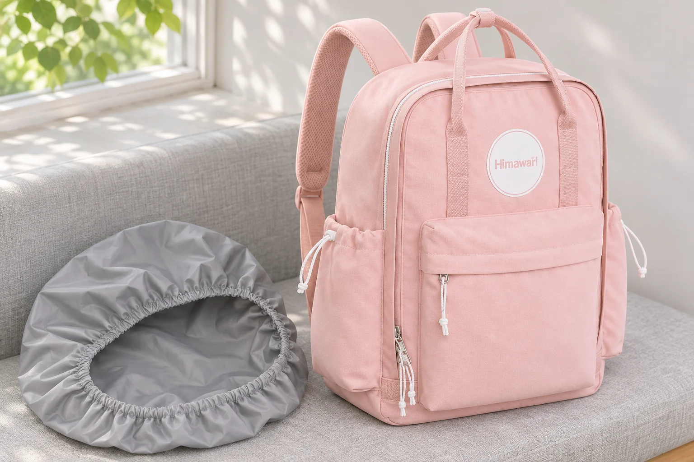
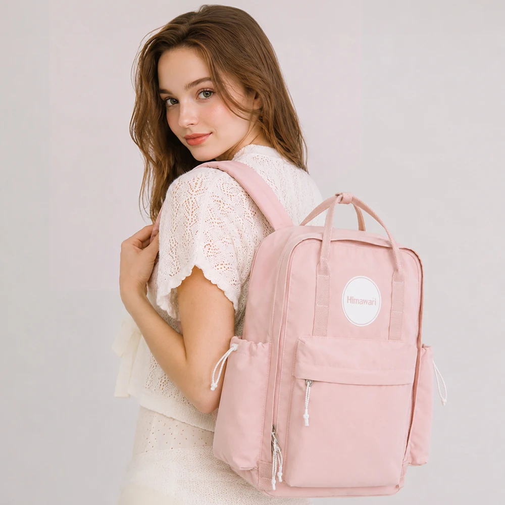

백팩 레인커버, 리터 표시만 맞으면 될까
비 오는 날을 앞두고 백팩에 씌울 커버를 찾다 보면 작은 크기부터 큰 크기까지 리터 범위로 나뉜 제품을 만나게 됩니다. 가진 백팩에 용량 표기가 없다면 어떤 범위를 골라야 할까요. 가로·세로·폭을 곱해 임의의 리터 수를 붙이기보다 커버가 감쌀 가방의 외곽과 뒤쪽에서 남을 부분을 따로 보는 편이 낫습니다. 커버의 표기 방식과 백팩의 치수 정보는 처음부터 같은 항목이 아닐 수 있습니다.
No.1089 핑크의 공개 외부 크기는 가로 29.5cm, 세로 42cm, 폭 12cm입니다. 용량은 현재 제품 정보에 별도로 표시되어 있지 않습니다. 이 가방을 예시로 커버를 고르는 과정을 따라가되 사진에 배치한 회색 커버는 연출용 소품입니다. 실제 호환이나 방수 성능을 확인한 구성품이 아니며 가방에 포함된다는 뜻도 아닙니다.
후보를 고를 때: 닫힌 가방의 외곽과 비교합니다
먼저 커버 판매처가 어떤 가방을 기준으로 크기를 나누는지 읽습니다. 용량 범위만 적혀 있는지, 높이와 폭 같은 외부 치수도 안내하는지 살펴봅니다. 같은 용량대에도 길고 좁은 몸체와 낮고 두꺼운 몸체가 있을 수 있으므로 리터 숫자가 비슷하다는 이유만으로 윗모서리와 바닥이 모두 들어간다고 확정할 수 없습니다. 가방의 구체적인 형태를 함께 대조할 자료가 필요합니다.
제조사의 표기 예로 Osprey Ultralight Raincover Medium은 30~50리터 가방을 대상으로 안내하고 맞춤을 위한 조임끈이 있다고 설명합니다. 이는 그 커버 제품의 안내입니다. 이 범위를 No.1089의 권장 커버 규격으로 옮기거나 조임끈이 있으니 어떤 가방에도 맞는다고 해석해서는 안 됩니다. 후보 제품마다 적용 범위와 장착 방식을 따로 읽어야 하는 이유를 보여주는 예시로만 참고합니다.
No.1089에서는 둥근 윗선과 아래쪽 앞 포켓이 만드는 외곽을 함께 봅니다. 앞면이 평평한 직사각형 한 장으로 끝나는 형태가 아니므로 가로와 세로만 맞추는 것으로 비교를 마치기 어렵습니다. 평소 짐을 넣고 닫았을 때 포켓이 얼마나 나오는지, 옆주머니의 물건까지 함께 감쌀 생각인지도 정해야 합니다. 공개 폭 12cm가 모든 사용 상태의 돌출을 포함한다고 가정하지 않습니다.
큰 커버를 고르면 비교가 모두 끝나는 것도 아닙니다. 남는 천을 어디에 모으는지와 조임 부위가 어떤 면에 놓이는지까지 확인해야 합니다. 작은 가방에 넓은 커버를 씌운 사진이 있다면 가방의 바닥 아래로 천이 늘어지는지, 어깨끈 쪽에서 조절하는 구조인지 관찰할 수 있습니다. 장착 사진이 없을 때에는 더 큰 치수를 임의로 고르는 대신 판매처에 가방 외곽을 알려 주고 해당 커버의 장착 범위를 묻습니다.

씌우는 자리를 볼 때: 뒤쪽 입구도 남습니다
가방의 앞면과 바닥을 덮는 모습이 보여도 등판과 어깨끈이 통째로 들어가는지는 별개입니다. 커버의 입구가 어느 면에서 조여지는지, 어깨끈이 밖으로 나오는 길은 어디인지 장착 사진에서 확인합니다. 앞에서 보았을 때 가방이 가려졌다는 사실을 가방 전체가 밀봉됐다는 뜻으로 읽지 않습니다. 덮이는 면과 밖에 남는 부위를 구별해야 원하는 보호 범위와 비교할 수 있습니다.
손잡이도 확인할 부위입니다. 커버를 씌운 뒤 가방을 손에 들 계획이라면 원래 손잡이를 그대로 잡을 수 있는지 보세요. 커버의 천이나 조임끈을 대신 잡고 들면 된다고 정하지 않습니다. 등판에 남는 끈이 어깨끈 사이를 지나가는지, 가방을 벗었다가 다시 멜 때 어떤 부분을 풀어야 하는지도 장착 안내에서 확인할 수 있습니다. 겉을 가리는 범위와 메고 벗는 동작을 함께 비교합니다.
커버로 덮이지 않는 곳을 직접 확인하려고 물을 뿌릴 필요는 없습니다. 물에 대한 성능은 커버와 가방 각각의 제품 설명에서 읽고 여기서는 씌우는 형태와 조작 가능한 부위만 봅니다. 전자기기나 종이를 넣는 날의 보호 방법도 커버 하나가 대신 보증하지 않습니다. 기기와 별도 포장의 취급 조건은 각 안내에서 확인합니다.
손잡이를 잡아 책상 옆에 내려놓는 장면과 다시 등에 메는 장면도 이어서 봅니다. 커버의 입구가 손잡이 밑에 걸쳐 있는지, 가방을 벗은 상태에서 조임 부위를 찾을 수 있는지 살필 수 있습니다. 이때 별도 커버의 끈과 가방의 지퍼 손잡이가 겹쳐 보이면 어느 것이 어느 제품에 달린 부품인지 먼저 구별합니다. 둘을 함께 잡아당기는 동작을 새로운 장착법으로 삼지 않습니다.

물건을 꺼낼 때: 커버와 지퍼의 순서를 잇습니다
커버가 앞 포켓을 덮으면 그 포켓을 열기 전에 커버를 어느 정도 벗겨야 할 수 있습니다. No.1089의 앞 포켓을 자주 사용할 생각이라면 덮인 채 손을 밀어 넣는 모습보다 입구를 드러내고 지퍼를 여는 장면을 확인하는 편이 구체적입니다. 커버를 일부 걷었을 때 바닥이 계속 감싸져 있는지와 손이 들어갈 여유는 실제 조합에서 봐야 합니다.
접어서 보관하는 커버를 골랐다면 사용 후 둘 자리도 장착 방식과 연결됩니다. 벗긴 커버는 가방 안의 마른 물건과 곧바로 함께 넣을 수 있는 상태인지 살피고 해당 커버의 관리 안내를 따릅니다. 가방에는 커버를 담을 전용 주머니가 확인되지 않았는데도 빈 포켓 하나를 그 용도로 소개할 수는 없습니다. 별도 소품의 보관 조건을 가방의 기능처럼 덧붙이지 않는 편이 정확합니다.
구매 전 문의에는 No.1089 핑크라는 모델·옵션과 공개 외부 치수를 함께 적을 수 있습니다. 앞 포켓이 나온 전체 모습, 커버가 조여질 등판 쪽 사진도 후보를 설명할 자료입니다. 커버의 어떤 크기가 이 외곽을 감싸는지, 어깨끈과 손잡이는 어디에 남는지 물으면 리터 표기가 없는 가방도 구체적으로 비교할 수 있습니다. 답을 받은 뒤에는 안내된 조합과 실제 사용하려는 짐 상태가 같은지 확인합니다.
일반 구조와 제품 표기의 참고 자료: Osprey · Ultralight Raincover Medium 제품 안내.